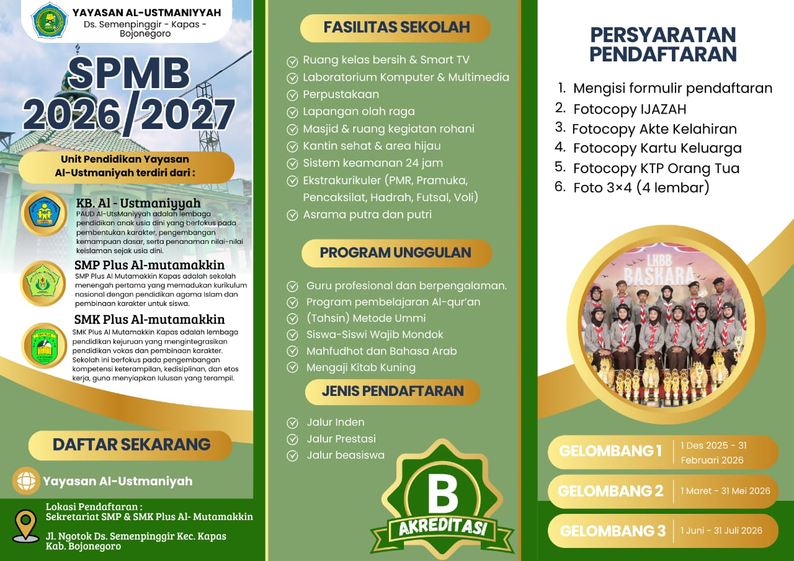
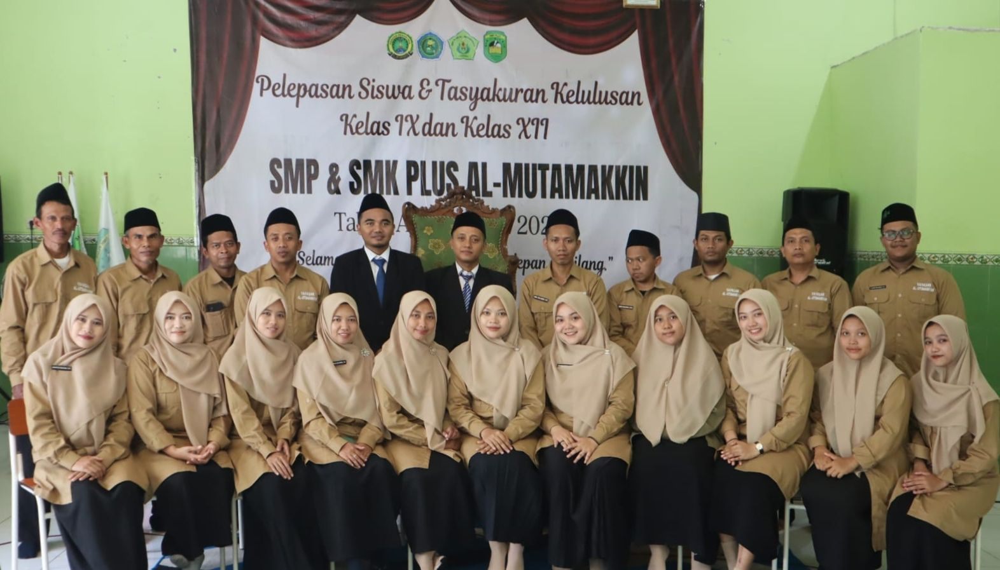
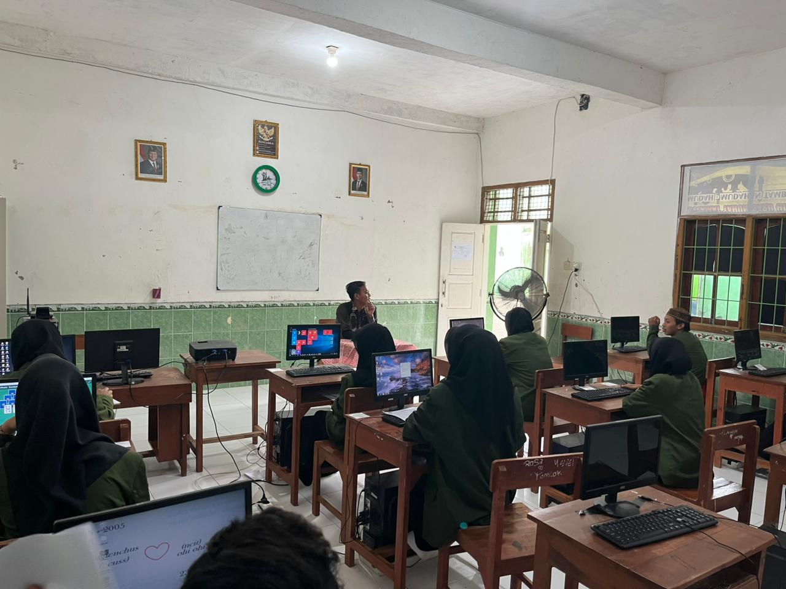

SMK Plus Al - Mutamakkin

SMK Plus Al-Mutamakkin adalah sekolah menengah kejuruan swasta berbasis pondok pesantren yang terletak di Kecamatan Kapas, Kabupaten Bojonegoro, Jawa Timur. Sekolah ini memadukan kurikulum pendidikan vokasi nasional dengan pendidikan moral spiritual ala santri demi mencetak lulusan terampil yang berakhlak mulia.
Memujudkan Generasi Ungul Yang Mandiri, Berkarakter Islami.
Mempelajari Perawatan Dan Pebaikan Kendaraan Ringan.
Belajar Pencatatan, Pengolongan, Peringakasan Dan Transaksi Keuangan.
Belajar jaringan komputer, server, dan keamanan jaringan.



Email: smkplusalmutamakkinkapas@gmail.com
Telepon: 0857-4848-8647
Alamat: Jl Ngotok Rt 06 Rw 01, Ds Semen Pinggir, Kec Kapas, Kab Bojonegoro, Jawa Timur